.project-header h2 {
            font-size: 2.4rem;
            margin-bottom: 30px;
            color: #333;
        }

        .project-header img {
            width: 100%;
            height: 400px;
            object-fit: cover;
            border-radius: 8px;
        }

        .project-section {
            margin-bottom: 30px;
        }

        .project-section h3 {
            font-size: 1.4rem;
            margin-bottom: 15px;
            color: #333;
        }

        .project-section p {
            line-height: 1.6;
            color: #666;
        }

        /* 研究論文専用スタイル */
        .research-paper-section {
            background: linear-gradient(135deg, #f6f9fc 0%, #e9f4ff 100%);
            border-radius: 12px;
            padding: 25px;
            margin-bottom: 30px;
            border-left: 4px solid #667eea;
        }

        .research-paper-section h3 {
            color: #2d3748;
            margin-bottom: 20px;
            font-size: 1.3rem;
        }

        .paper-info p {
            margin-bottom: 12px;
            line-height: 1.6;
        }

        .paper-info strong {
            color: #2d3748;
            font-weight: 600;
        }

        .pdf-actions {
            margin-top: 20px;
            text-align: center;
        }

        .pdf-button {
            display: inline-flex;
            align-items: center;
            gap: 10px;
            background: linear-gradient(135deg, #667eea 0%, #764ba2 100%);
            color: white !important;
            padding: 12px 24px;
            border-radius: 8px;
            text-decoration: none !important;
            font-weight: 600;
            transition: all 0.3s ease;
            box-shadow: 0 4px 12px rgba(102, 126, 234, 0.3);
        }

        .pdf-button:hover {
            transform: translateY(-2px);
            box-shadow: 0 6px 20px rgba(102, 126, 234, 0.4);
            background: linear-gradient(135deg, #764ba2 0%, #667eea 100%);
        }

        /* ハイライト表示 */
        .highlights-grid {
            display: grid;
            gap: 12px;
            margin-top: 15px;
        }

        .highlight-item {
            display: flex;
            align-items: flex-start;
            gap: 10px;
            padding: 12px;
            background: #f8fffe;
            border-radius: 8px;
            border-left: 3px solid #43e97b;
        }

        .highlight-icon {
            color: #43e97b;
            font-size: 1.1rem;
            margin-top: 2px;
        }

        .highlight-item span:last-child {
            color: #2d3748;
            line-height: 1.5;
        }

        .tech-stack {
            display: flex;
            flex-wrap: wrap;
            gap: 10px;
            margin-top: 15px;
        }

        .tech-tag {
            background-color: #f0f0f0;
            padding: 5px 15px;
            border-radius: 20px;
            font-size: 0.9rem;
            color: #666;
        }

        .links {
            display: flex;
            gap: 20px;
            margin-top: 20px;
        }

        .links a {
            display: inline-flex;
            align-items: center;
            gap: 8px;
            color: #333;
            text-decoration: none;
            padding: 8px 16px;
            border-radius: 6px;
            background-color: #f0f0f0;
            transition: background-color 0.3s ease;
        }

        .links a:hover {
            background-color: #e0e0e0;
        }

        /* Contact */
        .contact {
            background-color: #000;
            color: #fff;
            padding: 100px 0;
            position: relative;
            overflow: hidden;
        }

        .contact-content {
            display: flex;
            justify-content: space-between;
            max-width: 1600px;
            margin: 0 auto;
            padding: 0 20px;
        }

        .contact-left {
            flex: 1;
            padding-right: 50px;
        }

        .contact h2 {
            font-size: 5rem;
            margin-bottom: 30px;
        }

        .contact-info {
            margin-bottom: 30px;
        }

        .contact-info h3 {
            font-size: 1.2rem;
            margin-bottom: 10px;
        }

        .contact-info p {
            font-size: 1rem;
        }

        /* Responsive */
        @media (max-width: 1200px) {
            .work-grid {
                grid-template-columns: repeat(2, 1fr);
                padding: 0 50px;
            }

            .timeline-item {
                flex: 0 0 350px;
            }
            
            .timeline-arrow-line .line {
                width: 70%;
            }
            
            .timeline-arrow-line .arrow {
                right: 14%;
            }
        }

        @media (max-width: 768px) {
            h1 {
                font-size: 3rem;
            }

            .subtitle {
                font-size: 1.2rem;
            }

            .about, .contact-content {
                flex-direction: column;
            }

            .about-image {
                padding-right: 0;
                margin-bottom: 30px;
                margin-left: 20px;
            }

            .work-grid {
                grid-template-columns: 1fr;
                padding: 0 20px;
            }
            
            .previous-work h2 {
                font-size: 3rem;
                margin-left: 20px;
            }

            .contact-left {
                padding-right: 0;
                margin-bottom: 30px;
            }
            
            .wave svg {
                height: 100px;
            }

            .timeline-track {
                gap: 20px;
                padding: 0 10px;
            }

            .timeline-item {
                flex: 0 0 300px;
            }

            .timeline-content h3 {
                font-size: 1.5rem;
            }

            .timeline-content p {
                font-size: 1rem;
            }

            .section-title {
                font-size: 3rem;
            }
            
            .timeline-arrow-line .line {
                width: 80%;
            }
            
            .timeline-arrow-line .arrow {
                right: 9%;
            }

            .timeline-images {
                padding-left: 20px;
            }

            .image-large {
                width: 160px;
                height: 160px;
            }

            .image-small {
                width: 80px;
                height: 80px;
                left: 180px;
            }

            .modal-content {
                width: 95%;
                margin: 10% auto;
            }

            .project-header h2 {
                font-size: 2rem;
            }

            .project-header img {
                height: 300px;
            }
        }
    </style>

    <script>
        // プロジェクトデータ
        const projectData = {
            mario: {
                title: "マリオAI(深層強化学習)",
                image: "img/mario.png",
                description: "深層強化学習を用いてスーパーマリオをプレイするAIを開発",
                motivation: "ゲームAIの可能性を追求したいという思いから、まずは馴染みのあるマリオで強化学習に挑戦。プレイヤーの行動を学習させることで、人間らしい動きを実現することを目指しました。",
                technical: "PyTorchを使用した深層強化学習モデルの実装。Environment設計からReward設計まで、様々な工夫を重ねました。特に、正確な状態認識のための画面処理や、効果的な報酬設計に注力しました。",
                outcome: "ステージクリアまでの最適な行動を学習させることに成功。障害物の回避や適切なジャンプタイミングの習得など、人間らしいプレイスタイルを実現できました。",
                tech_stack: ["Python", "PyTorch", "OpenAI Gym", "深層強化学習", "Computer Vision"],
                github: "https://github.com/keita324/MarioAI/tree/main"
            },

            luigi: {
                title: "ルイージAI(深層強化学習)",
                image: "img/luigi.png",
                description: "深層強化学習を用いてスーパーマリオをプレイするAIを開発",
                motivation: "「人間は他者の行動を観察することで効率的に学習できる」という仮説のもと、AIでその検証を試みました。具体的には、実際にプレイするマリオAIと、その行動を観察するだけのルイージAIを作成し、協調学習の可能性を探究しています。",
                technical: "PyTorchによる深層強化学習モデルを実装。特に注力した点は：\n・マリオの行動を正確に認識するための画面処理システム\n・観察学習を可能にする報酬設計\n・複数エージェント間での学習情報の共有機構など",
                outcome: "マリオAIの単独学習では1000回の試行で到達できなかったステージを、ルイージAIとの協調により700回の試行でクリア達成\n・観察による学習が、試行錯誤による直接学習を補完できることを実証\n・この知見を人間の教育現場での「見て学ぶ」という学習手法の理論的裏付けとして活用することを検討中",
                tech_stack: ["Python", "PyTorch", "OpenAI Gym", "深層強化学習", "Computer Vision"],
                github: "※他研究室との共同研究のため、ソースコードは非公開"
            },

            car: {
                title: "自動運転AI(深層強化学習)",
                image: "img/car.png",
                description: "人間の運転行動を模倣する自動運転AIの研究開発",
                motivation: "自動運転技術の課題の一つに「乗客に優しい運転の実現」があります。既存の強化学習による自動運転AIは、目的地への到達は実現できても、急ブレーキや急カーブなど乗客に負担をかける運転になりがちでした。そこで、人間の運転行動を観察・模倣することで、より快適な運転の実現を目指しています。",
                technical: "PyTorchによる深層強化学習モデルを実装。以下の点に特に注力しています：\n・人間の運転データからの効率的な学習メカニズム\n・乗り心地を考慮した報酬設計\n・加速度変化の最小化を考慮した行動決定機構\n・安全性と快適性のバランスを取る制御システム",
                outcome: "Virtual Motorsport Labさまと共同研究を予定。VML自動運転ハッカソンにも出場しました。",
                tech_stack: ["Python", "PyTorch", "深層強化学習", "模倣学習", "Computer Vision", "行動予測"],
                github: "※企業との共同研究のため、ソースコードは非公開"
            },

            nagano: {
                title: "ECサイト(スイーツ販売)",
                image: "img/nagano.png",
                description: "長野県の特産品を扱うECサイトの開発",
                motivation: "実践的なWebアプリケーション開発の経験を積むため、実際のビジネスに近い形でのECサイト開発に挑戦しました。",
                technical: "Ruby on Railsを使用したフルスタック開発。ユーザー管理、商品管理、注文処理など、ECサイトに必要な機能を実装。特に、カート機能やお気に入り機能の実装に工夫を凝らしました。",
                outcome: "基本的なECサイトの機能を備えた完成度の高いサイトを構築。レスポンシブデザインにも対応し、使いやすいUIを実現しました。",
                tech_stack: ["HTML/CSS", "Ruby on Rails", "Bootstrap","jQuery", "MySQL"],
                github: "https://github.com/keita324/ECsite"
            },

            bookers: {
                title: "Bookers(本のレビューサイト)",
                image: "img/bookers2.jpg",
                description: "本の感想を共有できるレビューサイト",
                motivation: "読書好きのコミュニティを作りたいと考え、本の感想を気軽にシェアできるプラットフォームを開発しました。",
                technical: "Ruby on Railsでの基本的なCRUD機能に加え、ユーザーフォロー機能やいいね機能を実装。また、非同期通信を活用して、スムーズな操作感を実現しました。",
                outcome: "読書記録を簡単に管理でき、他のユーザーと感想を共有できるコミュニティサイトが完成しました。",
                tech_stack: ["HTML/CSS", "Ruby on Rails", "jQuery", "Bootstrap"],
                github: "https://github.com/keita324/bookers2-muro"
            },

            meshiterro: {
                title: "meshiterro(食事投稿サイト)",
                image: "img/meshittero.png",
                description: "食事の写真と感想を共有できるSNSサイト",
                motivation: "グルメ好きが気軽に情報交換できるプラットフォームを作りたいと考え、開発に着手しました。",
                technical: "画像アップロード機能、位置情報の管理、タグ付け機能などを実装。また、検索機能を充実させ、ユーザーが求める情報に素早くアクセスできるようにしました。",
                outcome: "食事の記録と共有が簡単にできるSNSサイトを構築。ユーザー同士のインタラクションを促進する機能も実装しました。",
                tech_stack: ["HTML/CSS", "Ruby on Rails","Bootstrap"],
                github: "https://github.com/keita324/meshiterro"
            },

            cartpole: {
                title: "カートポールでのグループ学習検証",
                image: "img/cartpole.png",
                description: "人間のグループ学習を模した深層強化学習AIシステム",
                motivation: "人間の協調学習からヒントを得て、計算能力の異なる複数のAIエージェントが協力することで、計算効率と学習性能の両立が可能になるという仮説を検証したいと考えました。限られたリソース環境での深層強化学習の適用範囲拡大を目指しています。",
                technical: "PyTorchを使用した深層強化学習モデルを実装。隠れ層のニューロン数が異なる3つのエージェント（Agent64、Agent32、Agent16）を導入し、共有経験リプレイメモリと適応的エージェント選択機構を組み合わせたグループ学習システムを構築しました。",
                outcome: "OpenAI GymのCartPole環境での実験において、特に低性能エージェント（Agent16）が個別学習時の93.3ステップから、グループ学習により184.4ステップへと約2倍の性能向上を実現。高性能エージェントの性能を阻害することなく、相乗効果を確認できました。",
                highlights: [
                    "Agent16の性能向上：93.3 → 184.4ステップ（約2倍改善）",
                    "高性能エージェントの性能維持（Agent64: 200ステップ維持）",
                    "共有経験リプレイメモリによる効率的な知識共有",
                    "適応的エージェント選択による最適な協調学習"
                ],
                research_info: {
                    conference: "大阪公立大学大学院 研究発表",
                    authors: "室谷 佳汰, 池田 誠, 野津 亮",
                    abstract: "人間のグループ学習にヒントを得た深層強化学習手法を提案。異なる性能を持つ複数エージェントの協調により、計算効率と学習性能の両立を実現。CartPole環境での実験において、低性能エージェントが約2倍の性能向上を達成。"
                },
                tech_stack: ["Python", "PyTorch", "OpenAI Gym", "深層強化学習", "DQN", "グループ学習"],
                github: "※研究論文として発表予定のため、ソースコードは非公開",
                pdf_link: "https://drive.google.com/file/d/1GItqbs9fV0m97421-SUU1qv550ewB7aP/view?usp=sharing"
            },

            cartpole_q: {
                title: "グループ学習の報酬分析（国際学会版）",
                image: "img/cartpole_q.jpg",
                description: "報酬ヒートマップによるグループ学習メカニズムの詳細分析",
                motivation: "国際学会での発表に向けて、グループ学習がなぜ効果的なのかをより深く理解するため、各エージェントがどの状態でどれだけの報酬を獲得しているかを視覚的に分析する必要がありました。特に、異なる性能のエージェント間での学習パターンの違いを明確にしたいと考えました。",
                technical: "matplotlib、seaborn、NumPyを使用して報酬のヒートマップ可視化システムを構築。CartPoleの状態空間（カート位置、カート速度、棒の角度、棒の角速度）を離散化し、各状態における累積報酬を色の濃淡で表現。個別学習とグループ学習の報酬分布を比較分析できるインタラクティブな可視化ツールを開発しました。",
                outcome: "ヒートマップ分析により、グループ学習時に低性能エージェント（Agent16）が高性能エージェント（Agent64）の学習データから恩恵を受けている具体的な状態領域を特定。特に、棒の角度が±10度以内の微妙なバランス制御において、グループ学習が個別学習を大幅に上回る報酬分布を示すことを発見。この知見により学習メカニズムの理論的根拠を強化できました。",
                highlights: [
                    "状態空間の可視化による学習パターン分析",
                    "棒の角度±10度以内での優位性発見", 
                    "個別学習vs.グループ学習の定量的比較",
                    "理論的根拠の強化と国際学会での発表準備"
                ],
                research_info: {
                    conference: "国際学会発表準備中",
                    authors: "室谷 佳汰, 池田 誠, 野津 亮",
                    abstract: "深層強化学習におけるグループ学習効果を報酬ヒートマップにより詳細分析。状態空間の可視化により、エージェント間の協調メカニズムを理論的に解明し、学習効率向上の根拠を提示。"
                },
                tech_stack: ["Python", "PyTorch", "matplotlib", "seaborn", "NumPy", "データ可視化", "統計分析"],
                github: "※国際学会発表用研究のため、ソースコードは非公開",
                pdf_link: "#"
            },

            learning_app: {
                title: "楽しく学べる学習管理アプリ（DMM WEBCAMP）",
                image: "img/dmm.png",
                description: "プログラミング学習の離脱率を劇的に改善した学習管理アプリ",
                motivation: "コロナ禍でリモート授業に変わったことで、生徒の離脱率が10.4%から34%まで急増。生徒へのアンケートや面談から「小さな機能を作っても全体が見えなくて達成感がない」「エラーばかりで前に進んでいる気がしない」という声を受け、プログラミング本来の楽しさを届けたいと考えました。",
                technical: "Ruby on Railsとjavaascriptを使用したWebアプリケーション。学習進捗の可視化機能、次の課題へのヒント表示機能、5分程度で完了する小さな確認問題・演習問題の配置、バーチャル教室への誘導機能を実装。UX設計を重視し、ユーザー目線を徹底した開発プロセスを採用しました。",
                outcome: "離脱率を34%から11.2%まで劇的に改善（対面時代と同等レベル）。生徒からは「一つひとつの機能が完成する達成感が身についた」「オンライン学習で不安だったが最後まで楽しく勉強できた」との高評価を獲得。プロジェクトマネージャーとして5人チームを率い、技術とマネジメントの両面でスキルを向上させました。",
                highlights: [
                    "離脱率を34% → 11.2%に劇的改善（約3分の1に削減）",
                    "対面授業時代と同等の離脱率まで回復",
                    "5人チームでのプロジェクト管理を担当",
                    "ユーザー目線を徹底したUX設計の実践"
                ],
                research_info: {
                    conference: "DMM WEBCAMP 社内プロジェクト発表",
                    authors: "室谷 佳汰（プロジェクトマネージャー）他4名",
                    abstract: "コロナ禍でのリモート学習における離脱率問題を解決するため、プログラミング学習の楽しさを届ける学習管理アプリを開発。ユーザー目線を徹底したUX設計により、離脱率を3分の1まで削減することに成功。"
                },
                tech_stack: ["Ruby on Rails", "JavaScript", "HTML/CSS", "MySQL", "UX/UI設計", "プロジェクト管理"],
                github: "※DMM WEBCAMP社内プロジェクトのため、ソースコードは非公開",
                pdf_link: "https://drive.google.com/file/d/1N3N7Z5tx-lC0JO2I4vafkOax4_iTprR-/view?usp=sharing"
            }
        };

        // モーダルを開く関数
        function openModal(projectId) {
            const modal = document.getElementById('projectModal');
            const project = projectData[projectId];

            if (!project) return;

            const modalContent = `
                <div class="project-details">
                    <div class="project-header">
                        <h2>${project.title}</h2>
                        
                    </div>

                    ${project.research_info ? `
                    <div class="research-paper-section">
                        <h3>📄 研究論文情報</h3>
                        <div class="paper-info">
                            <p><strong>発表先：</strong>${project.research_info.conference}</p>
                            <p><strong>著者：</strong>${project.research_info.authors}</p>
                            <p><strong>概要：</strong>${project.research_info.abstract}</p>
                        </div>
                        ${project.pdf_link && project.pdf_link !== '#' ? `
                        <div class="pdf-actions">
                            <a href="${project.pdf_link}" target="_blank" class="pdf-button">
                                <svg width="20" height="20" viewBox="0 0 24 24" fill="none" stroke="currentColor" stroke-width="2">
                                    <path d="M14 2H6a2 2 0 0 0-2 2v16a2 2 0 0 0 2 2h12a2 2 0 0 0 2-2V8z"></path>
                                    <polyline points="14,2 14,8 20,8"></polyline>
                                    <line x1="16" y1="13" x2="8" y2="13"></line>
                                    <line x1="16" y1="17" x2="8" y2="17"></line>
                                    <polyline points="10,9 9,9 8,9"></polyline>
                                </svg>
                                完全版論文PDF を見る
                            </a>
                        </div>
                        ` : ''}
                    </div>
                    ` : ''}

                    ${project.highlights ? `
                    <div class="project-section">
                        <h3>🔍 研究のハイライト</h3>
                        <div class="highlights-grid">
                            ${project.highlights.map(highlight => `
                                <div class="highlight-item">
                                    <span class="highlight-icon">✨</span>
                                    <span>${highlight}</span>
                                </div>
                            `).join('')}
                        </div>
                    </div>
                    ` : ''}

                    <div class="project-section">
                        <h3>開発の動機</h3>
                        <p style="white-space: pre-line;">${project.motivation}</p>
                    </div>

                    <div class="project-section">
                        <h3>技術的なポイント</h3>
                        <p style="white-space: pre-line;">${project.technical}</p>
                    </div>

                    <div class="project-section">
                        <h3>成果</h3>
                        <p style="white-space: pre-line;">${project.outcome}</p>
                    </div>

                    <div class="project-section">
                        <h3>使用技術</h3>
                        <div class="tech-stack">
                            ${project.tech_stack.map(tech => `<span class="tech-tag">${tech}</span>`).join('')}
                        </div>
                    </div>

                    <div class="links">
                        <a href="${project.github}" target="_blank">
                            <svg width="20" height="20" viewBox="0 0 24 24" fill="none" stroke="currentColor" stroke-width="2" stroke-linecap="round" stroke-linejoin="round">
                                <path d="M9 19c-5 1.5-5-2.5-7-3m14 6v-3.87a3.37 3.37 0 0 0-.94-2.61c3.14-.35 6.44-1.54 6.44-7A5.44 5.44 0 0 0 20 4.77 5.07 5.07 0 0 0 19.91 1S18.73.65 16 2.48a13.38 13.38 0 0 0-7 0C6.27.65 5.09 1 5.09 1A5.07 5.07 0 0 0 5 4.77a5.44 5.44 0 0 0-1.5 3.78c0 5.42 3.3 6.61 6.44 7A3.37 3.37 0 0 0 9 18.13V22"></path>
                            </svg>
                            GitHub
                        </a>
                    </div>
                </div>
            `;

            modal.querySelector('.modal-body').innerHTML = modalContent;
            modal.style.display = 'block';
            setTimeout(() => modal.classList.add('show'), 10);
            document.body.style.overflow = 'hidden';
        }

        // モーダルを閉じる関数
        function closeModal() {
            const modal = document.getElementById('projectModal');
            modal.classList.remove('show');
            setTimeout(() => {
                modal.style.display = 'none';
                document.body.style.overflow = '';
            }, 300);
        }

        // モーダルの外側をクリックしたら閉じる
        window.onclick = function(event) {
            const modal = document.getElementById('projectModal');
            if (event.target === modal) {
                closeModal();
            }
        }

        // ESCキーでモーダルを閉じる
        document.addEventListener('keydown', function(event) {
            if (event.key === 'Escape') {
                closeModal();
            }
        });

        // スムーズスクロール
        document.querySelectorAll('a[href^="#"]').forEach(anchor => {
            anchor.addEventListener('click', function (e) {
                e.preventDefault();
                const target = document.querySelector(this.getAttribute('href'));
                if (target) {
                    target.scrollIntoView({
                        behavior: 'smooth',
                        block: 'start'
                    });
                    // メニューを閉じる
                    document.getElementById('menu-btn-check').checked = false;
                }
            });
        });

        // スクロール時のメニューボタン背景色変更
        window.addEventListener('scroll', function() {
            const menuBtn = document.querySelector('.menu-btn');
            if (window.scrollY > 100) {
                menuBtn.style.backgroundColor = 'rgba(255, 255, 255, 0.9)';
            } else {
                menuBtn.style.backgroundColor = 'rgba(255, 255, 255, 0.9)';
            }
        });

        // タイムラインアニメーション
        const sectionObserver = new IntersectionObserver((entries) => {
            entries.forEach(entry => {
                if (entry.isIntersecting) {
                    entry.target.classList.add('active');
                    const items = entry.target.querySelectorAll('.fade-in');
                    items.forEach((item, index) => {
                        setTimeout(() => {
                            item.classList.add('active');
                        }, 400 + index * 200);
                    });
                    sectionObserver.unobserve(entry.target);
                }
            });
        }, {
            threshold: 0.1
        });

        // セクションの監視を開始
        const timelineSection = document.querySelector('.timeline-section');
        if (timelineSection) {
            sectionObserver.observe(timelineSection);
        }
    </script>
</body>
</html><!DOCTYPE html>
<html lang="ja">
<head>
    <meta charset="UTF-8">
    <meta name="viewport" content="width=device-width, initial-scale=1.0">
    <title>室谷佳汰 - ポートフォリオ</title>
    <link rel="stylesheet" href="index.css">
    <link href="https://cdnjs.cloudflare.com/ajax/libs/font-awesome/6.0.0/css/all.min.css" rel="stylesheet">
</head>
<body>
    <div class="header">
        <div class="hamburger-menu">
            <input type="checkbox" id="menu-btn-check">
            <label for="menu-btn-check" class="menu-btn"><span></span></label>
            <div class="menu-content">
                <ul>
                    <li><a href="#about">About Me</a></li>
                    <li><a href="#journey">MY JOURNEY</a></li>
                    <li><a href="#works">PREVIOUS WORK</a></li>
                    <li><a href="#contact">GET IN TOUCH</a></li>
                </ul>
            </div>
        </div>
    </div>

    <section class="hero">
        <div class="hero-inner">
           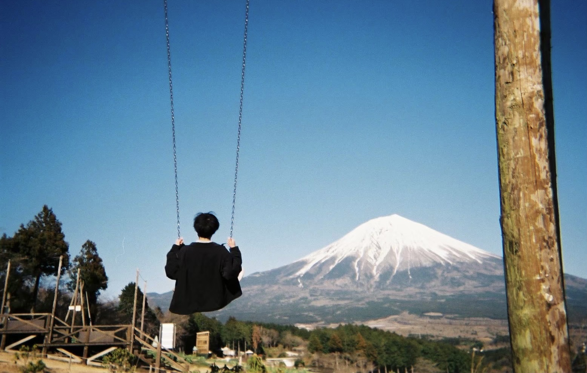
            <div class="hero-content">
                <h1>Muroya Keita</h1>
                <div class="subtitle">Thank you for coming!</div>
            </div>
        </div>
        <div class="wave">
            <svg xmlns="http://www.w3.org/2000/svg" viewBox="0 0 1440 320" preserveAspectRatio="none">
                <path fill="#f5f5f5" fill-opacity="1" d="M0,192L48,197.3C96,203,192,213,288,229.3C384,245,480,267,576,250.7C672,235,768,181,864,170.7C960,160,1056,192,1152,197.3C1248,203,1344,181,1392,170.7L1440,160L1440,320L1392,320C1344,320,1248,320,1152,320C1056,320,960,320,864,320C768,320,672,320,576,320C480,320,384,320,288,320C192,320,96,320,48,320L0,320Z"></path>
            </svg>
        </div>
    </section>

    <div class="container">
        <section class="about" id="about">
            <div class="about-image">
                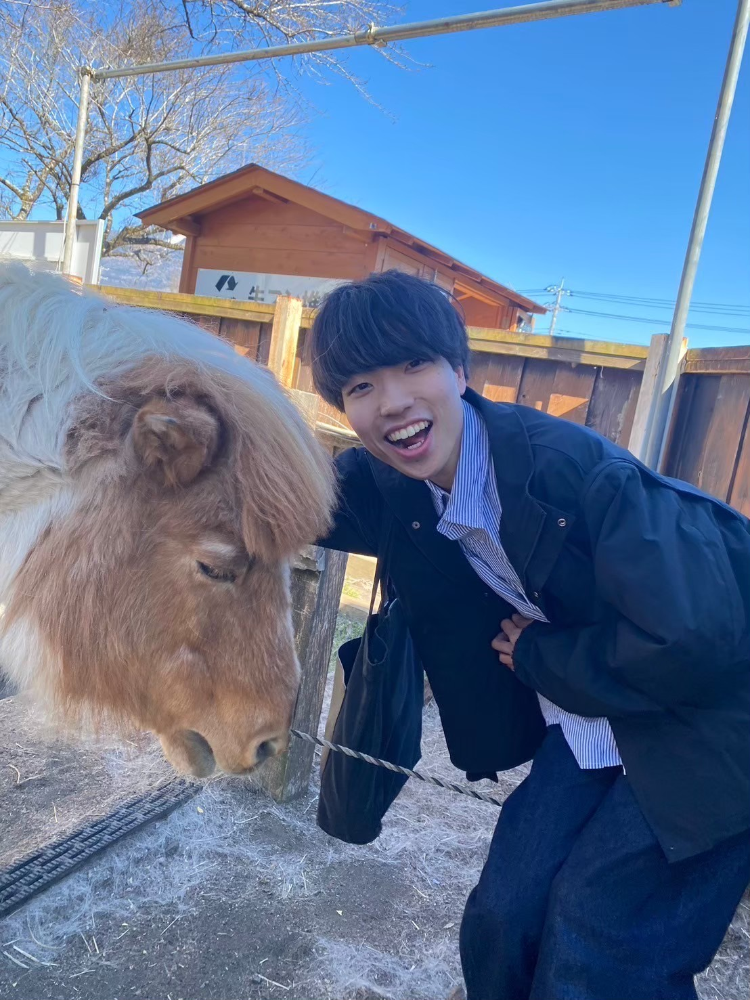
            </div>
            <div class="about-content">
                <h2>About Me</h2>
                <p>室谷 佳汰(ムロヤ ケイタ)</p>
                <p>大阪公立大学大学院 現代システム科学研究科 認知行動科学専攻</p>
                <br><p>滋賀県の彦根で生まれ育ちました。現在は大阪に住む大学院生です。</p>
                <br><p>研究室では、「人間に優しいAI」をテーマにゲームAIや自動運転の開発に取り組んでいます。</p>
                <br><p>転職用プログラミングスクール『DMM WEBCAMP』で3年間講師を務めています。</p>
                <br><p>ドラム、ボーカルが趣味であり特技です！動物も大好きです！！</p>
            </div>
        </section>

        <section class="timeline timeline-section" id="journey">
            <div class="container">
                <h2 class="section-title">MY JOURNEY</h2>
                
                <div class="timeline-arrow-line">
                    <div class="line"></div>
                    <div class="arrow"></div>
                </div>
                
                <div class="timeline-container">
                    <div class="timeline-track">
                        <div class="timeline-item fade-in">
                            <div class="timeline-content">
                                <div class="timeline-date">幼少期 - 高校</div>
                                <h3>つくることが好きだった</h3>
                                <div class="timeline-images">
                                    <div class="image-large">
                                        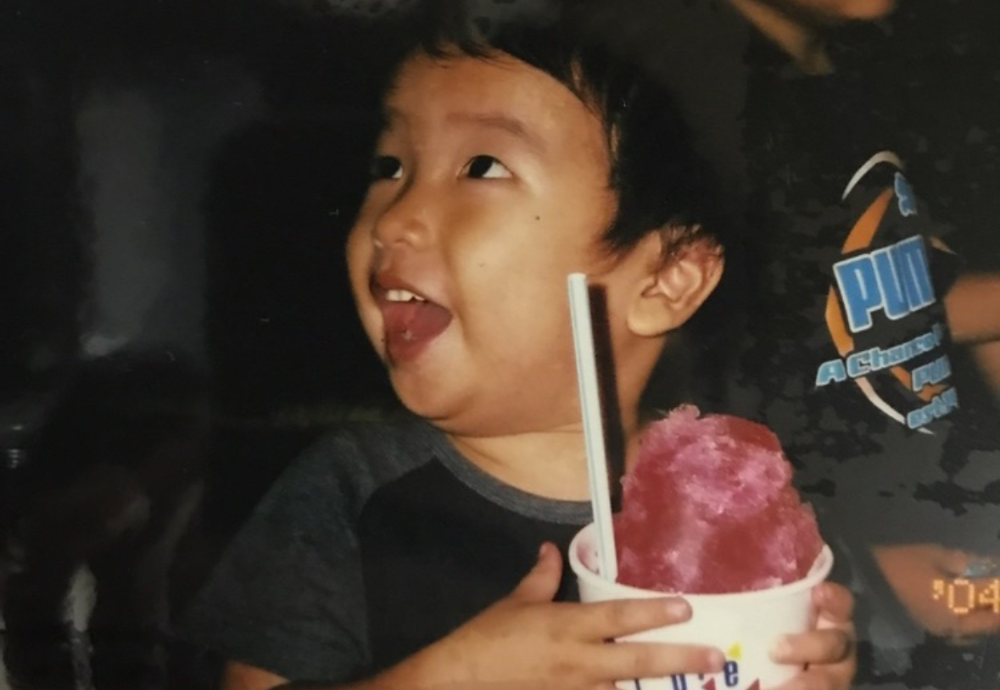
                                    </div>
                                    <div class="image-small">
                                        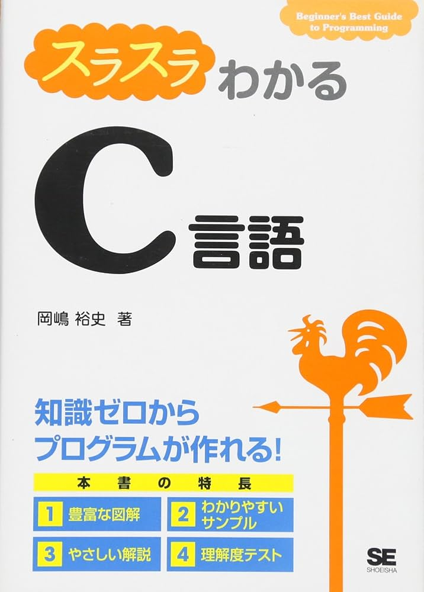
                                    </div>
                                </div>
                                <p>滋賀県彦根市で生まれ育つ。<br>小さい頃からものづくりで人を喜ばせることが好きで、想像力豊かな性格でした。小学生の時にはゲームやWebサイトを自作し、友人や家族に見せて感想を聞いて回ることも。</p>
                            </div>
                        </div>
        
                        <div class="timeline-item fade-in">
                            <div class="timeline-content">
                                <div class="timeline-date">大学時代</div>
                                <h3>人の心への興味</h3>
                                <div class="timeline-images">
                                    <div class="image-large">
                                        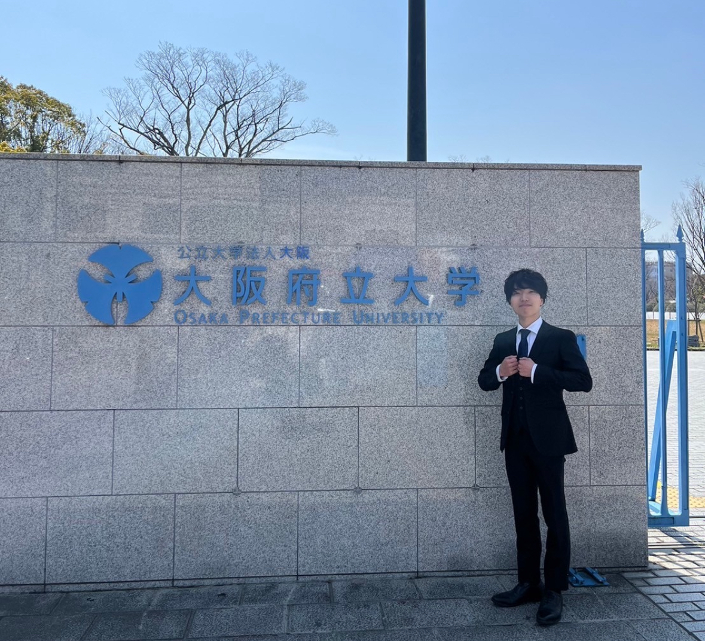
                                    </div>
                                    <div class="image-small">
                                        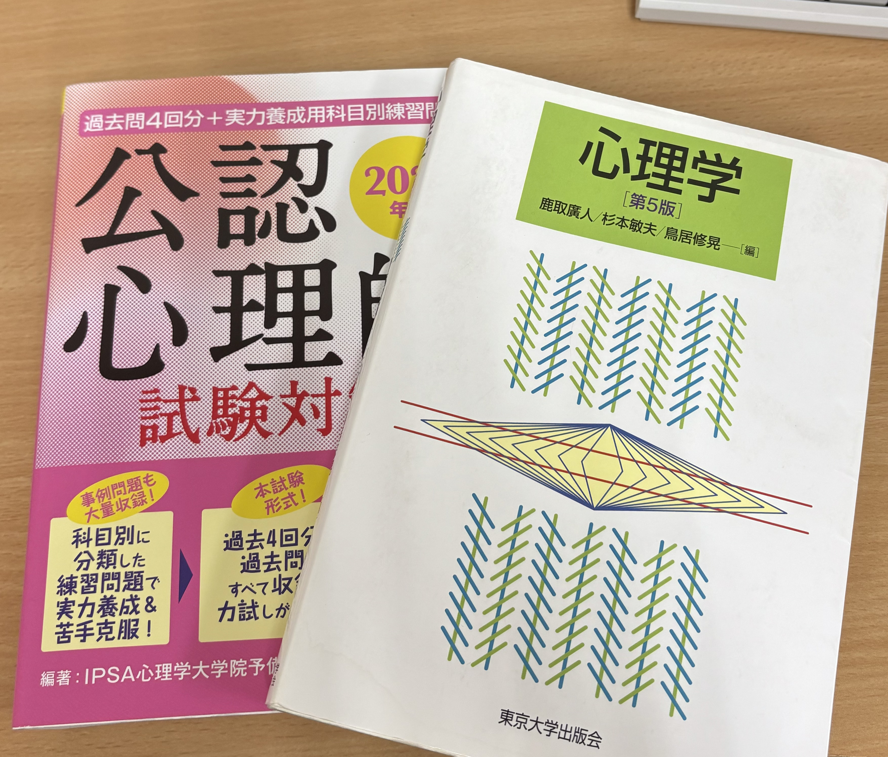
                                    </div>
                                </div>
                                <p>人の心への興味から、大阪府立大学に入学し、臨床心理学を専攻しました。<br>カウンセリングや文献調査を通じて、人を喜ばせるには「深層心理」の存在があることを学びました。</p>
                            </div>
                        </div>
        
                        <div class="timeline-item fade-in">
                            <div class="timeline-content">
                                <div class="timeline-date">大学時代</div>
                                <h3>プログラミング講師に</h3>
                                <div class="timeline-images">
                                    <div class="image-large">
                                        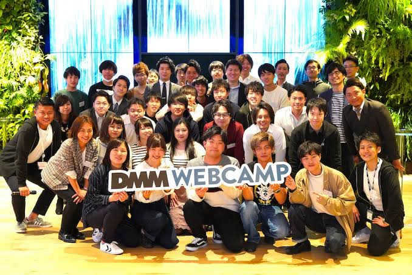
                                    </div>
                                    <div class="image-small">
                                        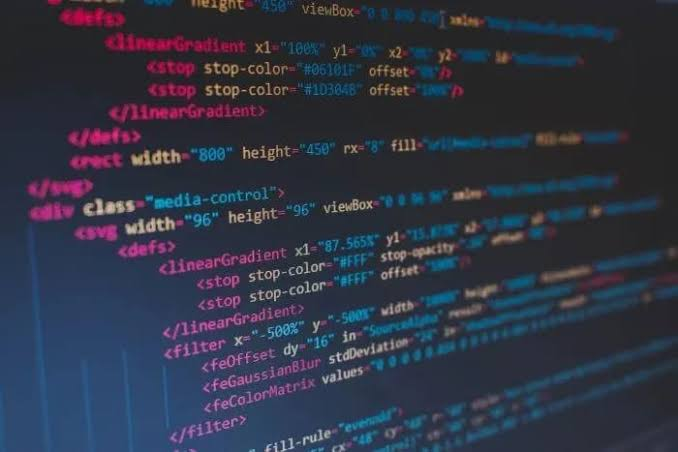
                                    </div>
                                </div>
                                <p>小中学生の時に熱中したプログラミングの楽しさが忘れられず、文系未経験から講師になりました。<br>生徒の悩みを解決しようと作ったアプリが大好評で、技術で人を喜ばせるやりがいを思い出しました。</p>
                            </div>
                        </div>
        
                        <div class="timeline-item fade-in">
                            <div class="timeline-content">
                                <div class="timeline-date">大学院進学</div>
                                <h3>文系から理系の大学院へ</h3>
                                <div class="timeline-images">
                                    <div class="image-large">
                                        
                                    </div>
                                    <div class="image-small">
                                        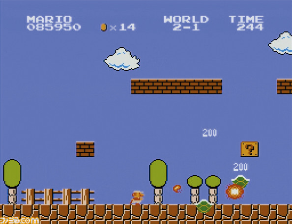
                                    </div>
                                </div>
                                <p>プログラミング講師の経験から、技術によって人の心を動かす楽しさを思い出し、大学院から機械学習・AIゼミへ進学しました。<br>「心理学を活かした、人に優しいAI」をテーマに研究に取り組んでいます。</p>
                            </div>
                        </div>
        
                        <div class="timeline-item fade-in">
                            <div class="timeline-content">
                                <div class="timeline-date">現在</div>
                                <h3>未来への展望</h3>
                                <div class="timeline-images">
                                    <div class="image-large">
                                        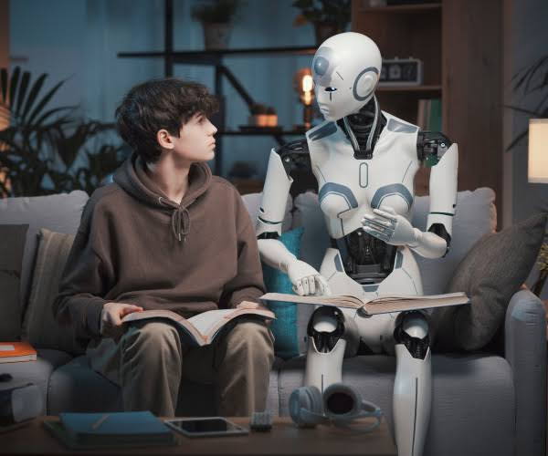
                                    </div>
                                    <div class="image-small">
                                        
                                    </div>
                                </div>
                                <p>現在は技術力と人間性の融合を目指し、研究活動に取り組んでいます。<br>将来は、単純に技術で効率化を行うだけでなく、人の心に寄り添った技術を提供できるような仕事がしたいと考えています。</p>
                            </div>
                        </div>
                    </div>
                </div>
            </div>
        </section>

        <section class="previous-work" id="works">
            <h2>PREVIOUS<br>WORK</h2>
            <div class="work-grid">
                <div class="work-item" onclick="openModal('cartpole')">
                    <div class="work-image">
                        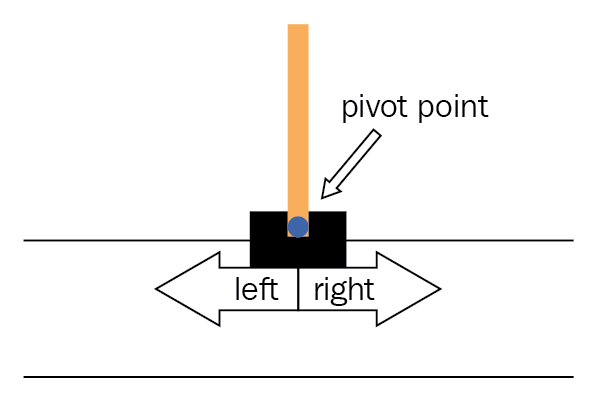
                    </div>
                    <div class="work-info">
                        <h3>カートポールでのグループ学習検証</h3>
                        <span class="view-more">詳細を見る</span>
                    </div>
                </div>

                <div class="work-item" onclick="openModal('cartpole_q')">
                    <div class="work-image">
                        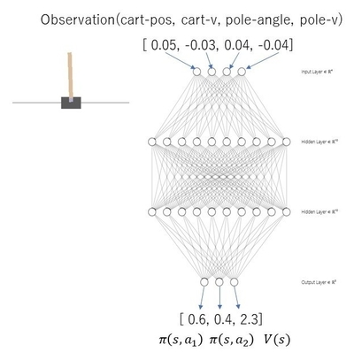
                    </div>
                    <div class="work-info">
                        <h3>グループ学習の報酬分析（国際学会版）</h3>
                        <span class="view-more">詳細を見る</span>
                    </div>
                </div>

                <div class="work-item" onclick="openModal('learning_app')">
                    <div class="work-image">
                        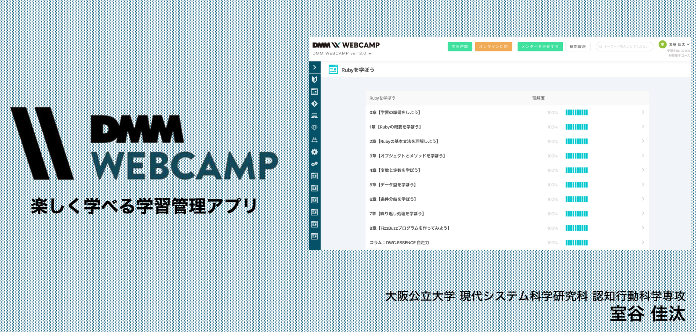
                    </div>
                    <div class="work-info">
                        <h3>楽しく学べる学習管理アプリ（DMM WEBCAMP）</h3>
                        <span class="view-more">詳細を見る</span>
                    </div>
                </div>

                <div class="work-item" onclick="openModal('mario')">
                    <div class="work-image">
                        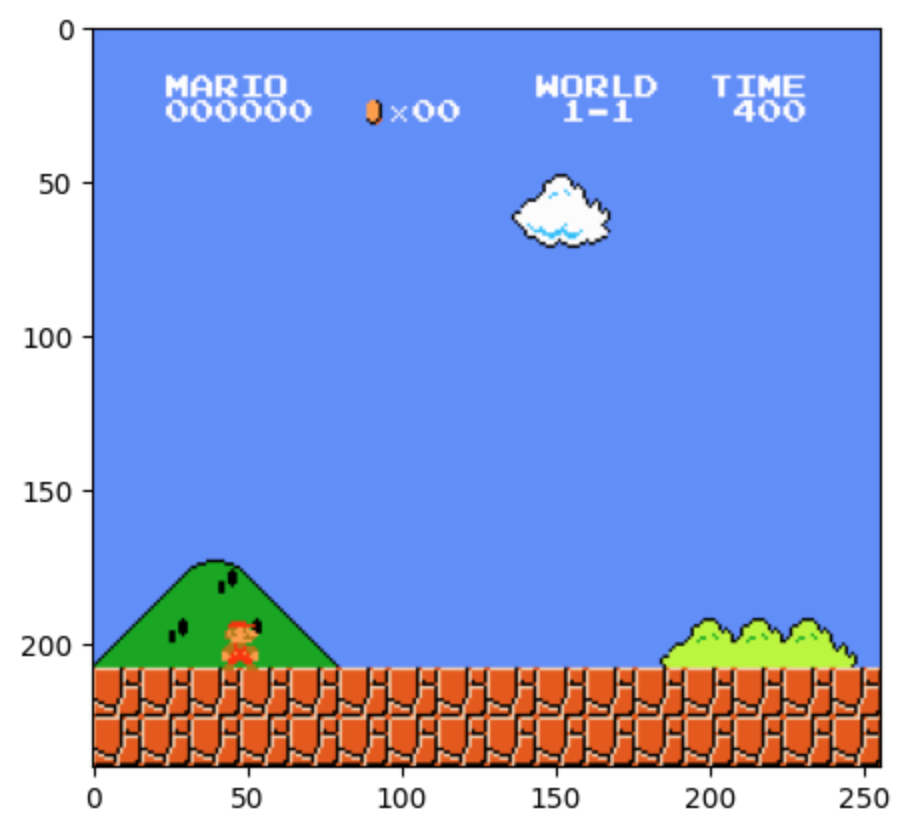
                    </div>
                    <div class="work-info">
                        <h3>マリオAI(深層強化学習)</h3>
                        <span class="view-more">詳細を見る</span>
                    </div>
                </div>

                <div class="work-item" onclick="openModal('luigi')">
                    <div class="work-image">
                        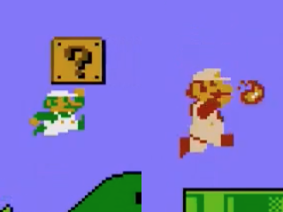
                    </div>
                    <div class="work-info">
                        <h3>ルイージAI(深層強化学習)</h3>
                        <span class="view-more">詳細を見る</span>
                    </div>
                </div>

                <div class="work-item" onclick="openModal('car')">
                    <div class="work-image">
                        
                    </div>
                    <div class="work-info">
                        <h3>自動運転AI</h3>
                        <span class="view-more">詳細を見る</span>
                    </div>
                </div>

                <div class="work-item" onclick="openModal('nagano')">
                    <div class="work-image">
                        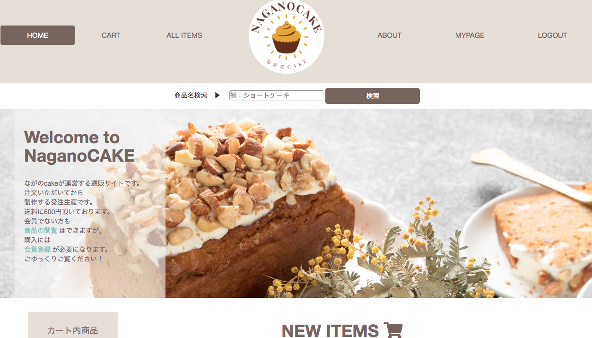
                    </div>
                    <div class="work-info">
                        <h3>ECサイト(スイーツ販売)</h3>
                        <span class="view-more">詳細を見る</span>
                    </div>
                </div>

                <div class="work-item" onclick="openModal('bookers')">
                    <div class="work-image">
                        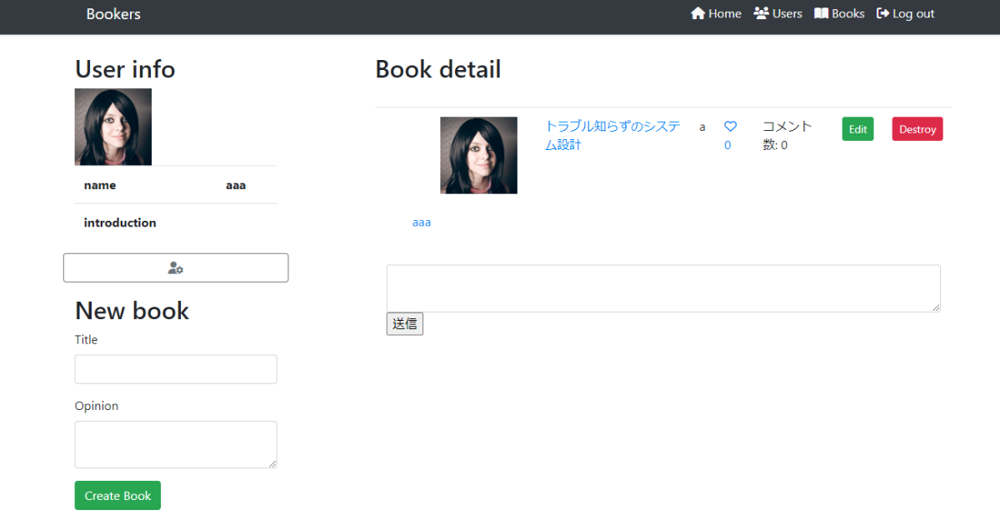
                    </div>
                    <div class="work-info">
                        <h3>Bookers(本のレビューサイト)</h3>
                        <span class="view-more">詳細を見る</span>
                    </div>
                </div>

                <div class="work-item" onclick="openModal('meshiterro')">
                    <div class="work-image">
                        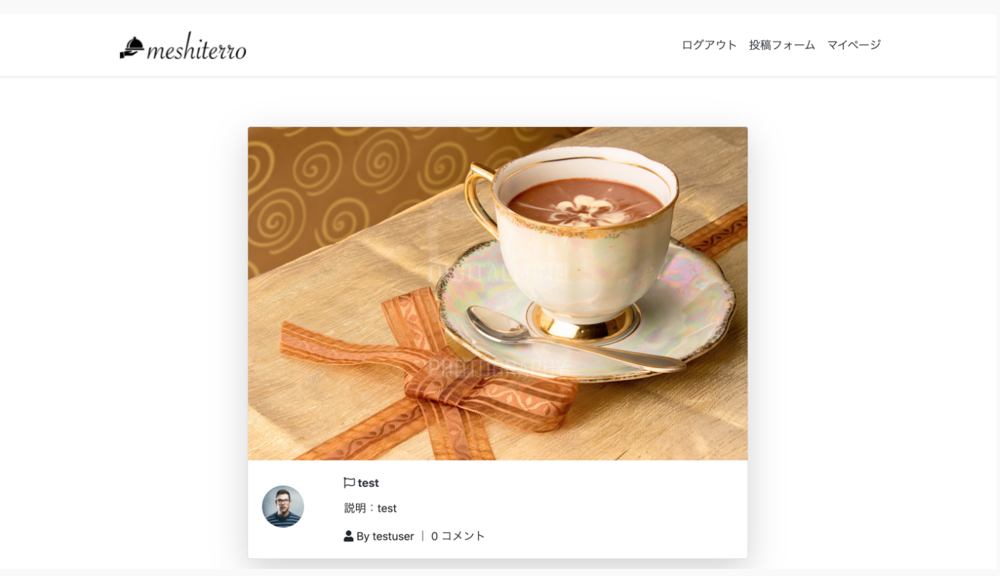
                    </div>
                    <div class="work-info">
                        <h3>meshiterro(食事投稿サイト)</h3>
                        <span class="view-more">詳細を見る</span>
                    </div>
                </div>
            </div>

            <!-- モーダル -->
            <div id="projectModal" class="modal">
                <div class="modal-content">
                    <span class="close-button" onclick="closeModal()">&times;</span>
                    <div class="modal-body">
                        <!-- モーダルの中身は動的に挿入されます -->
                    </div>
                </div>
            </div>
        </section>

        <section class="contact" id="contact">
            <div class="container">
                <div class="contact-content">
                    <div class="contact-left">
                        <h2>GET IN<br>TOUCH</h2>
                        <div class="contact-info">
                            <h3>Email:</h3>
                            <p>keita.muroya0324@gmail.com</p>
                        </div>
                    </div>
                </div>
            </div>
        </section>
    </div>

    <style>
        @import url('https://fonts.googleapis.com/css2?family=Noto+Serif+JP:wght@300;400;700&family=Cormorant+Garamond:wght@300;400;700&display=swap');

        * {
            margin: 0;
            padding: 0;
            box-sizing: border-box;
        }

        body {
            font-family: 'Noto Serif JP', serif;
            background-color: #f5f5f5;
            color: #333;
            line-height: 1.6;
        }

        /* Header */
        .header {
            position: fixed;
            top: 0;
            right: 0;
            z-index: 1000;
            padding: 20px;
        }

        .menu-btn {
            position: fixed;
            top: 20px;
            right: 20px;
            display: flex;
            height: 50px;
            width: 50px;
            justify-content: center;
            align-items: center;
            background-color: rgba(255, 255, 255, 0.9);
            border-radius: 50%;
            cursor: pointer;
            box-shadow: 0 4px 12px rgba(0,0,0,0.1);
            z-index: 1001;
        }

        .menu-btn span,
        .menu-btn span:before,
        .menu-btn span:after {
            content: '';
            display: block;
            height: 3px;
            width: 25px;
            border-radius: 3px;
            background-color: #333;
            position: absolute;
            transition: all 0.3s ease;
        }

        .menu-btn span:before {
            bottom: 8px;
        }

        .menu-btn span:after {
            top: 8px;
        }

        #menu-btn-check {
            display: none;
        }

        #menu-btn-check:checked ~ .menu-btn span {
            background-color: transparent;
        }

        #menu-btn-check:checked ~ .menu-btn span::before {
            bottom: 0;
            transform: rotate(45deg);
        }

        #menu-btn-check:checked ~ .menu-btn span::after {
            top: 0;
            transform: rotate(-45deg);
        }

        .menu-content {
            position: fixed;
            top: 0;
            right: -100%;
            width: 300px;
            height: 100%;
            background-color: rgba(255, 255, 255, 0.95);
            box-shadow: -2px 0 8px rgba(0,0,0,0.1);
            transition: all 0.3s ease;
            z-index: 1000;
            backdrop-filter: blur(8px);
        }

        #menu-btn-check:checked ~ .menu-content {
            right: 0;
        }

        .menu-content ul {
            padding: 100px 20px 0;
            list-style: none;
        }

        .menu-content ul li {
            margin-bottom: 30px;
            border-bottom: 1px solid #eee;
        }

        .menu-content ul li a {
            display: block;
            font-size: 1.2rem;
            color: #333;
            text-decoration: none;
            padding: 15px 10px;
            position: relative;
            transition: all 0.3s ease;
        }

        .menu-content ul li a:hover {
            padding-left: 20px;
            color: #666;
        }

        .menu-content ul li a::after {
            content: '→';
            position: absolute;
            right: 10px;
            opacity: 0;
            transition: all 0.3s ease;
        }

        .menu-content ul li a:hover::after {
            opacity: 1;
            right: 5px;
        }

        /* Hero Section */
        .hero {
            position: relative;
            height: 100vh;
            width: 100%;
            overflow: hidden;
        }

        .hero-inner {
            position: absolute;
            top: 0;
            left: 0;
            width: 100%;
            height: 100%;
            display: flex;
            align-items: center;
            justify-content: center;
        }

        .hero-background {
            position: absolute;
            top: 0;
            left: 0;
            width: 100%;
            height: 100%;
            object-fit: cover;
            z-index: -1;
        }

        .hero-content {
            text-align: center;
            color: #fff;
            z-index: 1;
            padding: 20px;
            background-color: rgba(0, 0, 0, 0.5);
            border-radius: 20px;
        }

        .wave {
            position: absolute;
            bottom: 0;
            left: 0;
            width: 100%;
            overflow: hidden;
            line-height: 0;
            z-index: 1;
        }

        .wave svg {
            position: relative;
            display: block;
            width: 100%;
            height: 150px;
        }

        h1 {
            font-size: 5rem;
            font-weight: 700;
            line-height: 1.2;
            margin-bottom: 20px;
            text-shadow: 2px 2px 4px rgba(0,0,0,0.5);
        }

        .subtitle {
            font-size: 1.5rem;
            font-weight: 300;
            margin-bottom: 40px;
            text-shadow: 1px 1px 2px rgba(0,0,0,0.5);
        }

        /* Container */
        .container {
            max-width: 1600px;
            margin: 0 auto;
            padding: 0 20px;
            width: 100%;
        }

        /* About Section */
        .about {
            display: flex;
            padding: 100px 0;
        }

        .about-image {
            flex: 1;
            padding-right: 50px;
            max-width: 400px;
            margin-right: 30px;
            margin-left: 100px;
        }

        .about-image img {
            width: 100%;
            height: auto;
            object-fit: cover;
            border-radius: 20px;
        }

        .about-content {
            flex: 1;
            display: flex;
            flex-direction: column;
            justify-content: center;
        }

        h2 {
            font-family: 'Cormorant Garamond', serif;
            font-size: 4rem;
            font-weight: 300;
            margin-bottom: 30px;
            line-height: 1;
        }

        p {
            font-size: 1.1rem;
            max-width: 600px;
        }

        /* Timeline */
        .timeline {
            padding: 100px 0;
            background-color: #f9f9f9;
            position: relative;
            overflow: hidden;
        }

        .section-title {
            text-align: center;
            font-family: 'Cormorant Garamond', serif;
            font-size: 4rem;
            margin-bottom: 30px;
        }

        .timeline-arrow-line {
            position: relative;
            height: 40px;
            margin-bottom: 40px;
        }

        .timeline-arrow-line .line {
            position: absolute;
            top: 50%;
            left: 50%;
            transform: translate(-50%, -50%);
            width: 60%;
            height: 4px;
            background-color: #333;
        }

        .timeline-arrow-line .arrow {
            position: absolute;
            right: 19%;
            top: 50%;
            transform: translateY(-50%);
            width: 0;
            height: 0;
            border-left: 15px solid #333;
            border-top: 10px solid transparent;
            border-bottom: 10px solid transparent;
        }

        .timeline-container {
            position: relative;
            padding: 40px 0;
        }

        .timeline-track {
            display: flex;
            gap: 30px;
            padding: 0 20px;
            overflow-x: auto;
            scrollbar-width: none;
            -ms-overflow-style: none;
        }

        .timeline-track::-webkit-scrollbar {
            display: none;
        }

        .timeline-item {
            flex: 0 0 400px;
            position: relative;
        }

        .timeline-content {
            background-color: white;
            border-radius: 12px;
            box-shadow: 0 4px 24px rgba(0,0,0,0.1);
            padding: 30px;
            height: 100%;
            display: flex;
            flex-direction: column;
        }

        .timeline-date {
            font-family: 'Cormorant Garamond', serif;
            font-size: 1.2rem;
            color: #666;
            margin-bottom: 10px;
        }

        .timeline-content h3 {
            font-size: 1.8rem;
            margin-bottom: 20px;
            color: #333;
        }

        .timeline-images {
            position: relative;
            width: 100%;
            height: 220px;
            margin: 20px 0;
            display: flex;
            justify-content: flex-start;
            padding-left: 40px;
        }

        .image-large {
            position: relative;
            width: 200px;
            height: 200px;
            border-radius: 50%;
            overflow: hidden;
            border: 4px solid #fff;
            box-shadow: 0 4px 16px rgba(0,0,0,0.1);
            z-index: 1;
        }

        .image-small {
            position: absolute;
            width: 110px;
            height: 110px;
            top: 60%;
            left: 220px;
            border-radius: 50%;
            overflow: hidden;
            border: 4px solid #fff;
            box-shadow: 0 4px 16px rgba(0,0,0,0.1);
            z-index: 2;
            transform: translateY(-50%);
        }

        .image-large img,
        .image-small img {
            width: 100%;
            height: 100%;
            object-fit: cover;
        }

        .timeline-content p {
            font-size: 1.1rem;
            line-height: 1.6;
            color: #666;
            flex-grow: 1;
        }

        .timeline-section {
            opacity: 0;
            visibility: hidden;
        }

        .timeline-section.active {
            opacity: 1;
            visibility: visible;
            transition: opacity 0.6s ease;
        }

        .fade-in {
            opacity: 0;
            transform: translateY(20px);
            visibility: hidden;
            transition: none;
        }

        .timeline-section.active .fade-in.active {
            opacity: 1;
            transform: translateY(0);
            visibility: visible;
            transition: opacity 0.6s ease, transform 0.6s ease;
        }

        .timeline-content {
            transition: transform 0.3s ease, box-shadow 0.3s ease;
        }

        .timeline-content:hover {
            transform: translateY(-5px);
            box-shadow: 0 6px 30px rgba(0,0,0,0.15);
        }

        .image-large,
        .image-small {
            transition: transform 0.3s ease, box-shadow 0.3s ease;
        }

        .timeline-content:hover .image-large {
            transform: scale(1.05) translateX(-5px);
        }

        .timeline-content:hover .image-small {
            transform: translateY(-50%) scale(1.05) translateX(5px);
        }

        /* Previous Work */
        .previous-work {
            padding: 100px 0;
            background-color: #f9f9f9;
        }

        .previous-work h2 {
            font-size: 5rem;
            margin-bottom: 50px;
            margin-left: 100px;
        }

        .work-grid {
            display: grid;
            grid-template-columns: repeat(3, 1fr);
            gap: 30px;
            padding: 0 100px;
        }

        .work-item {
            cursor: pointer;
            transition: transform 0.3s ease, box-shadow 0.3s ease;
            background-color: #fff;
            border-radius: 10px;
            overflow: hidden;
            box-shadow: 0 4px 6px rgba(0, 0, 0, 0.1);
        }

        .work-item:hover {
            transform: translateY(-5px);
            box-shadow: 0 5px 15px rgba(0,0,0,0.2);
        }

        .work-image {
            height: 200px;
            overflow: hidden;
        }

        .work-image img {
            width: 100%;
            height: 100%;
            object-fit: cover;
        }

        .work-info {
            padding: 20px;
        }

        .work-info h3 {
            font-size: 1.2rem;
            margin-bottom: 10px;
            color: #333;
        }

        .view-more {
            display: inline-block;
            margin-top: 10px;
            color: #666;
            font-size: 0.9rem;
        }

        /* Modal */
        .modal {
            display: none;
            position: fixed;
            z-index: 1000;
            left: 0;
            top: 0;
            width: 100%;
            height: 100%;
            background-color: rgba(0,0,0,0.5);
            opacity: 0;
            transition: opacity 0.3s ease;
        }

        .modal.show {
            opacity: 1;
        }

        .modal-content {
            background-color: #fff;
            margin: 5% auto;
            width: 90%;
            max-width: 800px;
            border-radius: 12px;
            position: relative;
            transform: translateY(-20px);
            opacity: 0;
            transition: all 0.3s ease;
        }

        .modal.show .modal-content {
            transform: translateY(0);
            opacity: 1;
        }

        .close-button {
            position: absolute;
            right: 20px;
            top: 15px;
            font-size: 28px;
            cursor: pointer;
            color: #666;
            z-index: 1;
            transition: color 0.3s ease;
        }

        .close-button:hover {
            color: #333;
        }

        .modal-body {
            padding: 40px;
            max-height: 80vh;
            overflow-y: auto;
        }

        .project-details {
            display: grid;
            gap: 30px;
        }

        .project-header {
            flex-direction: column;
            text-align: center;
            margin-bottom: 40px;
        }

        .project-header h2 {
            font-size: 2.4rem;
            margin-bottom
        )
